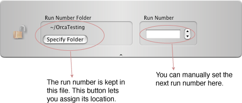

Configuration icon for Run Control:
This drawer pops out when you click the 'Run Type...' button above.
The run type bits can be labeled by providing a file with the following format:
1,NEUTRINO 2,SOURCE 3,CALIB 4,NCD 5,SALT 6,POISON 7,PARTIAL FILL 8,AIR FILL 9,D2O 10,H2O 11,UC BIT 12,TRANSITIONAL 13,SOURCE MOVING 14,COMP. COILS 15,ECA 16,DIAGNOSTIC 17,SUPERNOVA 18,PMT MAINTENANCE 19,PCA 20,EXPERIMENTAL 21,D20 CIRC. 22,BUBBLERS 23,S. L. ASSAYwhich is just a comma separated list of bit numbers and the bit names.
The run number is kept in a file. You must provide the location. Use the 'Run Number...' button to expose the following drawer:

The run control object puts out a data record at the start and the end of every run, and a heart beat record every so often. For a heart beat record the time is the number of seconds until the next heart beat. Otherwise it is the run start time or the run stop time. This record is a fixed length record with the following content:
Version 2 (new format):
Version 1 (old format, no longer used):
xxxx xxxx xxxx xxxx xxxx xxxx xxxx xxxx ^^^^ ^---------------------------------- RunControl ID (from header) ------^^^ ^^^^ ^^^^ ^^^^ ^^^^ ^^^^------ spare -----------------------------------^---- 1==heart beat record ------------------------------------^--- 1==Was a remote control run -------------------------------------^-- 1==Was a quick start run --------------------------------------^- 1==Run Started, 0==Run Stopped xxxx xxxx xxxx xxxx xxxx xxxx xxxx xxxx Run Number xxxx xxxx xxxx xxxx xxxx xxxx xxxx xxxx ut time or heart beat time